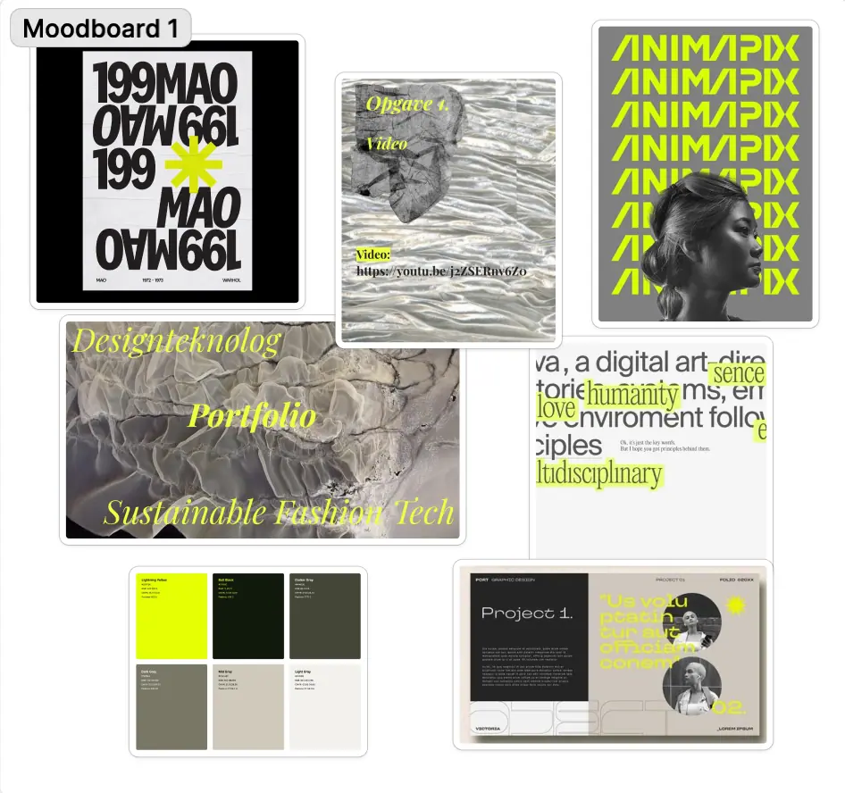
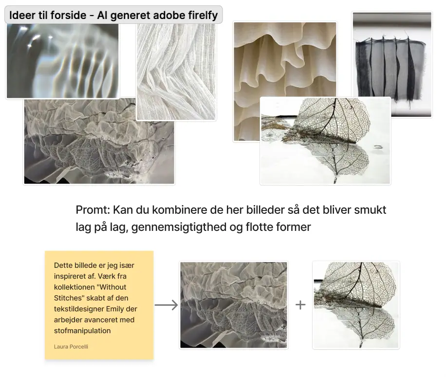
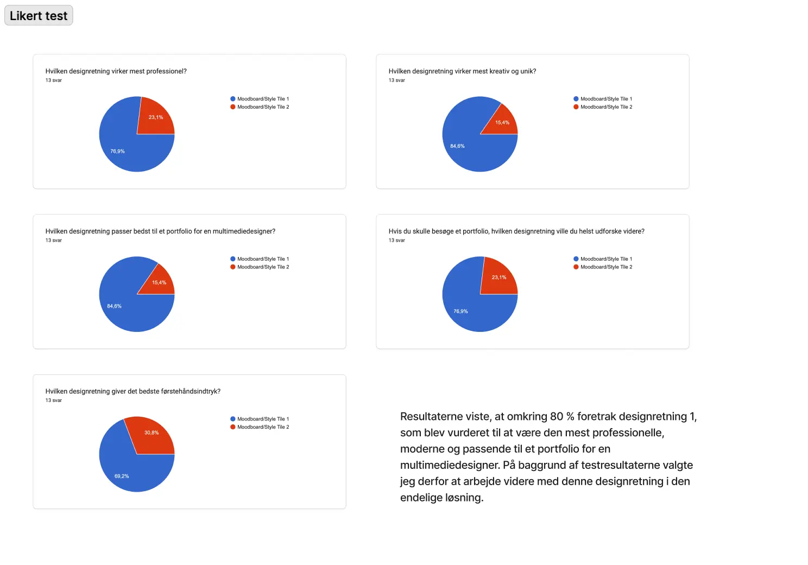
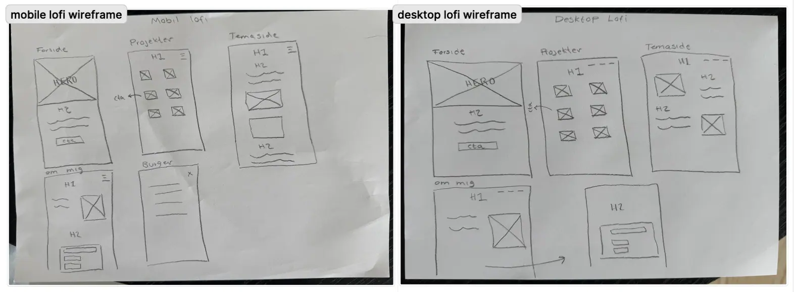

I tema 6 arbejdede jeg med mit afsluttende portfolio website for 1. semester. Formålet var at samle mine projekter fra semesteret og præsentere både mine færdige løsninger, min proces og min faglige udvikling. Jeg havde fokus på at skabe et personligt portfolio, der både viser mine designvalg, min måde at arbejde på og de metoder, jeg har lært gennem semesteret.
Portfolio website:
Den endelige løsning blev et personligt portfolio website, der samler mine projekter fra 1. semester. Portfolioet præsenterer både de færdige løsninger og de processer, der ligger bag hvert projekt. Målet var at skabe et overskueligt og visuelt portfolio med fokus på mine projekter, min udvikling og mine kompetencer som multimediedesigner.
Proces:
Arbejdet med portfolioet begyndte med research og inspiration, hvor jeg undersøgte forskellige kreative portfolier for at finde en visuel retning, der passede til min personlige stil. På baggrund af researchen udviklede jeg moodboards og style tiles for at afklare farver, typografi og det visuelle udtryk.



Herefter arbejdede jeg med wireframes og layoutskitser for at planlægge struktur, navigation og indhold på websitet. Jeg udviklede derefter flere designforslag i Figma og gennemførte en Likert-test for at undersøge, hvilket design brugerne foretrak. Resultaterne fra testen blev brugt til at træffe mine endelige designvalg.
Da designet var fastlagt, udviklede jeg en hi-fi prototype og begyndte kodningen af portfolioet i HTML, CSS og JavaScript. Undervejs arbejdede jeg med responsivt design og foretog løbende justeringer af layout, typografi og brugeroplevelse, indtil den endelige løsning var færdig.

Hvad har jeg lært?
Gennem arbejdet med portfolioet har jeg lært, hvordan man samler og præsenterer projekter på en overskuelig og professionel måde. Jeg har fået erfaring med at dokumentere og formidle min designproces fra research og idéudvikling til færdig løsning.
Derudover har jeg opnået en større forståelse for betydningen af en gennemarbejdet visuel identitet og brugeroplevelse. Arbejdet med portfolioet har også styrket mine færdigheder i Figma, HTML, CSS og JavaScript samt min evne til at anvende feedback og brugertests til at forbedre mine løsninger.
Portfolioet har samtidig givet mig mulighed for at reflektere over min udvikling gennem 1. semester og se, hvordan mine kompetencer inden for design, brugeroplevelse og frontend-udvikling har udviklet sig gennem de forskellige projekter.